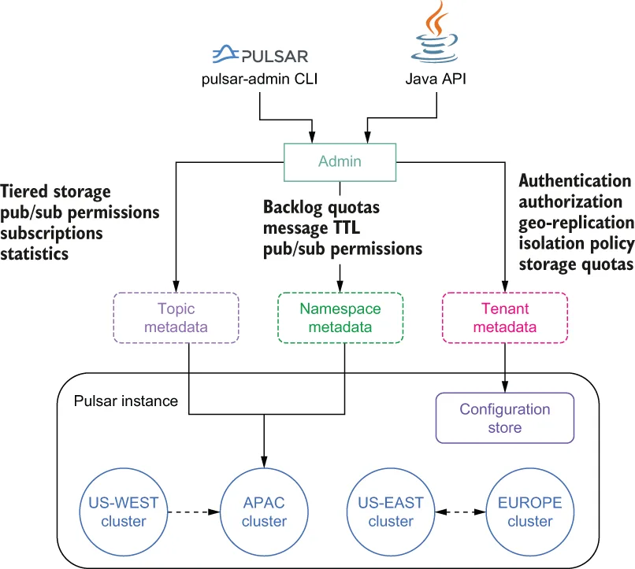

Pulsar provides a single administrative layer that allows you to administer the entire Pulsar instance, including all the subclusters, from a single endpoint. Pulsar’s admin layer controls authentication and authorization for all tenants, resource isolation policies, storage quotas, and more, as shown in figure 3.1.
Pulsar 提供了一个单一的管理层，使你能够从一个端点管理整个 Pulsar 实例，包括其中所有的子集群。Pulsar 的管理层控制着所有租户的认证与授权、资源隔离策略、存储配额等等，如图 3.1 所示。

Figure 3.1 Administrative view of Pulsar
图 3.1 Pulsar 的管理视图
This administrative interface allows you to create and manage all the various entities within a Pulsar cluster, such as tenants, namespaces, and topics, and configure their various security and data retention policies. Users can interact with this administrative interface via the pulsar-admin command-line interface tool or programmatically via a Java API, as shown in figure 3.1
这个管理接口使你能够创建和管理 Pulsar 集群内的各种实体，例如租户、命名空间和主题，并配置它们各自的安全策略与数据保留策略。用户可以通过 pulsar-admin 命令行工具与该管理接口交互，也可以通过 Java API 以编程方式交互，如图 3.1 所示。
When you start a local standalone cluster, Pulsar automatically creates a public tenant with a namespace named default that can be used for development purposes. However, this is not a realistic production scenario, so I will demonstrate how to create a tenant and namespace.
当你启动一个本地的 standalone 集群时，Pulsar 会自动创建一个公共租户，其中包含一个名为 default 的命名空间，可用于开发目的。然而，这并非一个现实的生产场景，因此我将演示如何创建租户和命名空间。
3.2.1 创建租户、命名空间与主题
3.2.2 Java Admin API